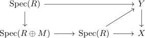

monomorphism of algebraic functors induces trivial cotangent module
Proposition
Let $f: Y \rightarrow X$ be a monomorphism of algebraic functors Then $\Omega_{f}$ is the zero object in the category of quasi-coherent modules over $Y$.
Proof
follows as there
